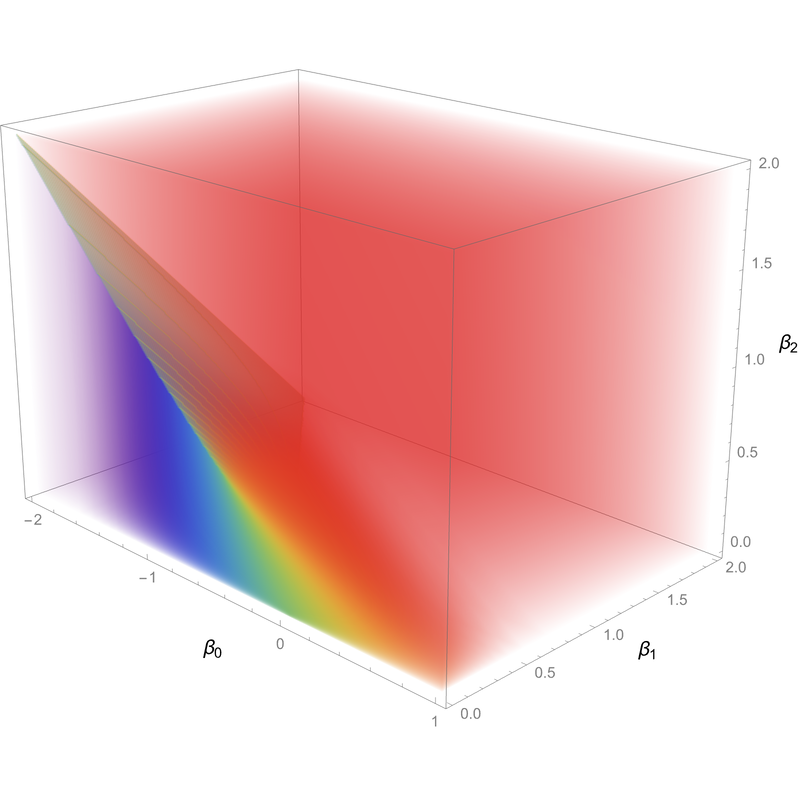
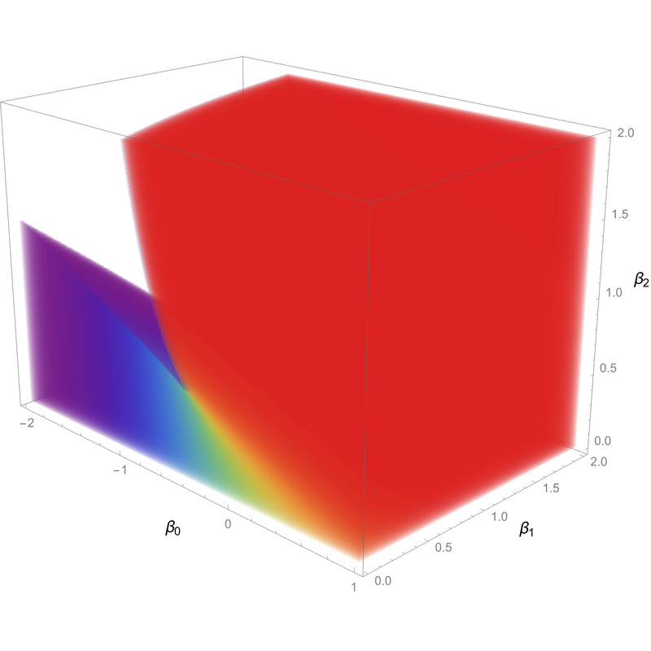
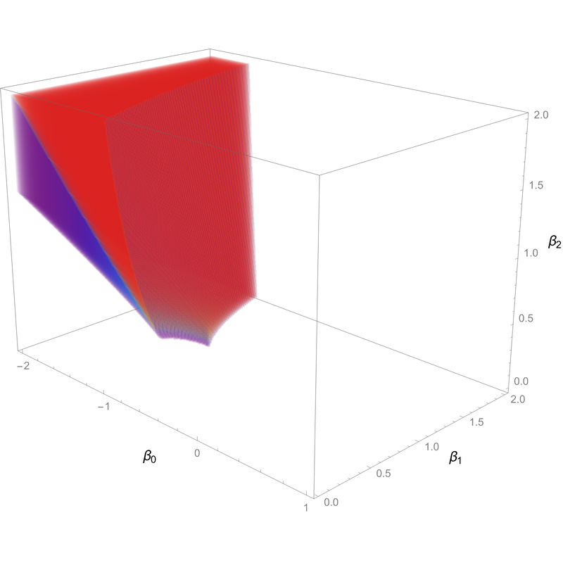

ERGMs are exponential families of random graph models.
In other words, an ERGM is a probability distribution on the space of \(n\)-vertex simple graphs \(x\), given by
\[\mathbb{P}[x] \propto \exp \left( H(x) \right), \]
where \(H\) is some function on graphs, called the Hamiltonian.
Typically, \(H\) will be a linear combination of subgraph densities; the most famous example is the edge-triangle model, also called the Strauss model.
Such ERGMs exhibit phase transitions where the macroscopic behavior changes sharply as the parameters are varied smoothly.
One may define high-temperature and low-temperature regimes for these models, and generally the behavior at low temperatures is more difficult to understand rigorously.



Left: the phase diagram of an ERGM with three parameters corresponding to edge count, wedge count, and triangle count.
Certain portions of the diagram have been made transparent so that the inner detail, including the surface of phase transition, can be seen.
Middle: the high-temperature regime of parameters, which is disjoint from the surface of phase transition.
Right: the low-temperature regime, which includes the surface of phase transition.
In my first paper in this area, I prove a concentration inequality for ERGMs in the low-temperature regime,
which shows that Lipschitz observables of samples exhibit Gaussian-type concentration, with a rate which depends on the Lipschitz behavior of the observable.
This extends the work of Ganguly and Nam from the high-temperature to the low-temperature regime.
Their applications also extend, and I obtain a bound on the Hamming-Wasserstein distance between an ERGM and a corresponding Erdős–Rényi random graph,
as well as a central limit theorem for the count of edges in certain small subcollections.
In order to prove these results, I introduce a new modification of a method due to Chatterjee which allows one to prove
concentration inequalities using various markers of rapid mixing for an appropriate Markov chain.
To apply this to ERGMs, I make use of recent work of Bresler, Nagaraj and Nichani, which proves metastable mixing
for low-temperature ERGMs; this can be viewed as a form of mixing "within a phase" for these models.
Additionally, a new argument which gets around the use of the FKG inequality in certain cases is also presented in this work.
In my second paper in this area, I prove a quantitative central limit theorem for the full edge count in an ERGM.
This means that the number of edges, when properly rescaled, converges to a Gaussian random variable, and the rate of convergence can be quantified in terms of some natural
distances between probability distributions.
This makes use of a new application of Stein's method due to Fang, Liu, Shao and Zhao, which allows one to prove quantitative CLTs
for observables under nonlinear exponential tilts of product measures (this includes ERGMs).
The key input in this argument is to show that the fluctuations of subgraph counts under ERGMs are driven by the fluctuations of the overall edge count; in other words, it is
a sort of linearization of the subgraph counts.
This was first done in the case of triangle counts by Sambale and Sinulis via functional-analytic techniques.
The main contribution of my work is to supplant these techniques by a more intuitive argument which also yields improved bounds, and moreover works for the low-temperature
regime of parameters, which was previously unexplored.
My argument is also flexible enough to allow for a proof of a quantitative central limit theorem for the degree of a vertex, which was not previously known even in the
high-temperature regime.